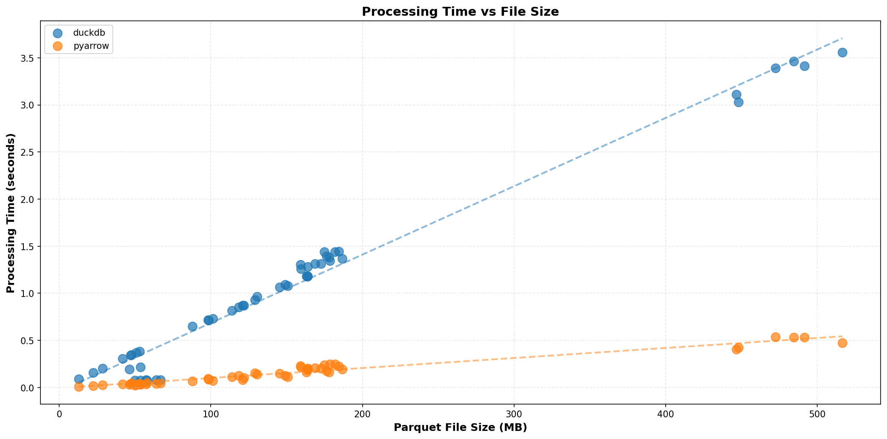
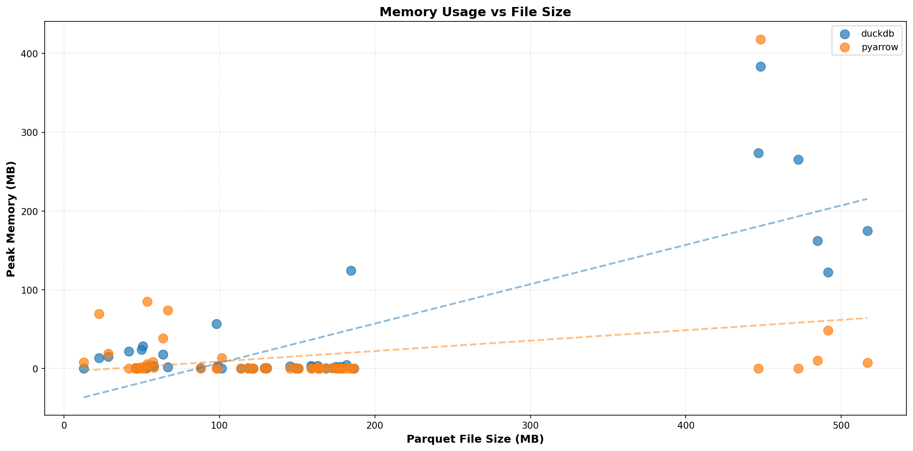
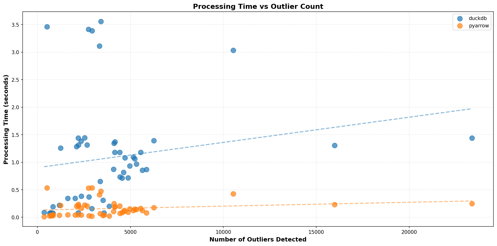
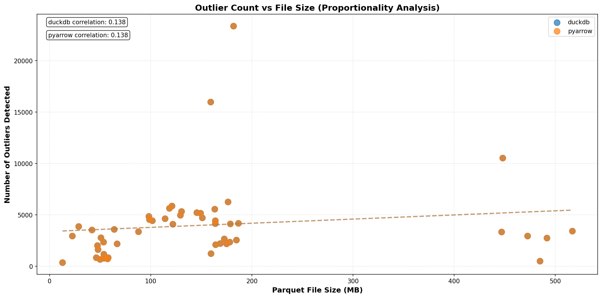

Performance Comparison Plots
Processing Time vs File Size
Processing time scales with file size. Scatter plots with trend lines show how each implementation handles larger datasets. Lower values and flatter slopes indicate better scalability.
Memory Usage vs File Size
Peak memory consumption relative to input file size. Shows memory efficiency and whether implementations load entire datasets into memory or use streaming approaches.
Processing Time vs Outlier Count
Relationship between number of outliers detected and processing time. Helps identify if performance degrades when more outliers need to be processed and filtered.
Memory Usage vs Outlier Count

Impact of outlier count on peak memory usage. Shows whether implementations need significant additional memory to store and process outlier results.
Outlier Count vs File Size (Proportionality)
Correlation between file size and number of outliers detected. Both implementations should detect identical outliers. Correlation coefficients show whether outlier rates are consistent across different data periods.